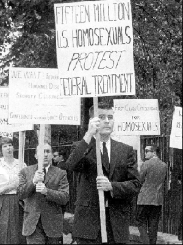

Propaganda played a crucial role in the persecution of the LGBTQ+ community in the 20th century.
It shaped people's negative opinion and justified discrimination, helping the government present
homosexuality and gender identity as an immoral and dangerous threat to society.
Propaganda appeared in many forms, going from newspapers to films, this allowed the government to keep
an eye on what was shown in the country. In Nazi Germany, officials were under the assumption that
homosexuals were destroying “the German nation”, thus justifying the enforcement of Paragraph 175.
The Soviet Union faced a similar ideology, where hatred was spread through media and hateful speeches.
Stalin portrayed homosexuality as a sign of moral decay and social harm.

In the United States, propaganda also played a major role. The Lavender Scare (1947–1975) was a moral panic (fear that a person or group of people threatens the safety of a community) that aimed to remove gay men and lesbians from federal jobs from 1947 until 1975. It followed the Executive Order 10450 officially signed in 1953, which tasked to investigate federal employees to determine if they posed a threat to security and firing everyone deemed gay or lesbian. This event coincided with the Red Scare (a period where people feared the rise of communism and leftist ideology from 1917 to 1920 and from 1947 until 1954). Homosexuals were considered to have “weak moral characters,” according to historian David K. Johnson who estimates approximately between 5.000 and 10.000 Americans went unemployed and many committing suicide during the Lavendar Scare. This demonstrates how propaganda could directly influence policy and impact thousands of citizens life.